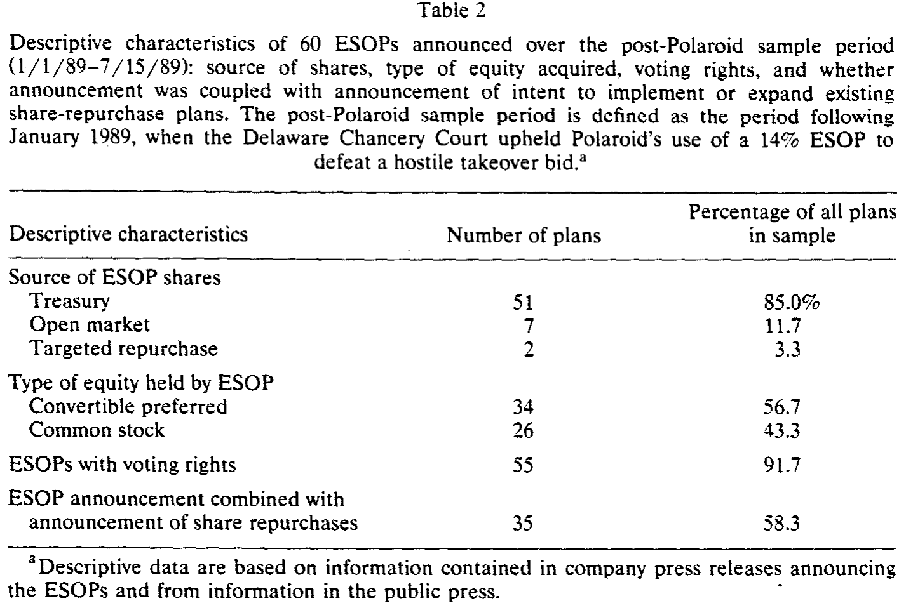
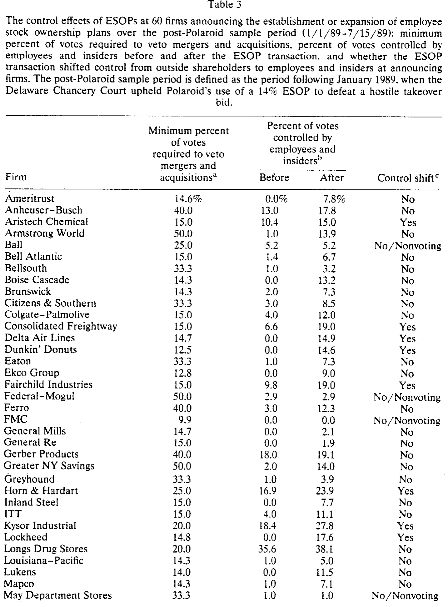
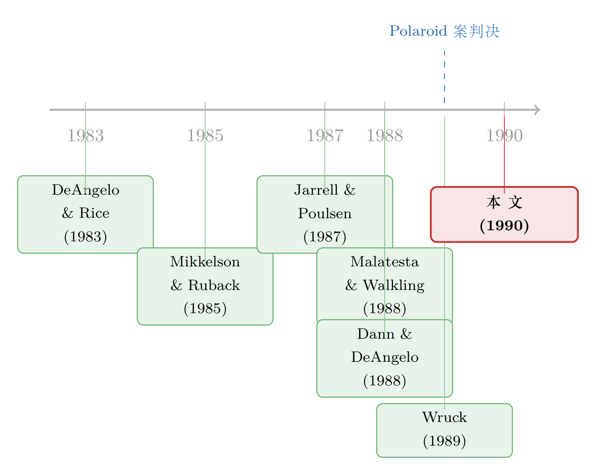

「为员工好」还是「为自己好」？——一个 ESOP 的两副面孔
本文读的是 Gordon & Pound (1990, Journal of Financial Economics)：员工持股计划 (ESOP) 对股东财富的影响，全看它是「激励工具」还是「控制权防御」。在收购压力下设立的 ESOP，平均让股价跌约 4%；为转移控制权而设计的 ESOP，跌约 4.6%；而用无投票权股票设立、刻意堵死防御用途的大型 ESOP，反而让股价涨约 2.4%。同一种工具，符号取决于它把投票权交给了谁。
1 一个「平均下来什么都没发生」的谜
先说一个让人挠头的事实。
把 1987 年 1 月到 1989 年 7 月间美国大公司宣布设立或扩张的 94 个员工持股计划 (employee stock ownership plan, ESOP) 放在一起，算它们公告日前后两天的平均超额收益，你会得到一个 0.4%、在统计上和零没有区别的数字。
换句话说——如果你只会做「平均」，你会得出结论：ESOP 对股东财富既无害也无益。市场对它无动于衷。
可这恰恰是本文要拆穿的幻觉。作者 Gordon 和 Pound 一上来就把话挑明：ESOP 是一种身份暧昧的东西。它既可能是一项严肃的长期经营战略——把员工的财富和公司股价绑在一起，激励他们好好干；也可能是一道精心设计的反收购堡垒——把一大块股票塞进一个听话的受托人手里，让外面想收购你的人永远凑不齐票数。
1988 年 4 月，特拉华州公司法第 203 条通过：敌意收购若遭目标公司董事会抵制，必须获得 85% 非管理层关联股份的批准。而 ESOP 持有的股份被默认视为「非关联」。于是一个只占 15% 股权的 ESOP，就握有了对敌意收购的否决权。1989 年 Polaroid 案，特拉华法院第一次为「防御性 ESOP」背了书。
正因为这两副面孔混在同一个样本里，平均值才会互相抵消、归于零。好 ESOP 的收益和坏 ESOP 的损失彼此对冲——平均，恰恰是最会骗人的那把尺子。
所以本文真正的方法论命题只有一句话：不要平均，要切分。把样本按「这个 ESOP 到底动了谁的控制权」切开，被掩盖的东西才会浮出来。
2 识别策略：用「控制权」给样本动刀
本文用的是最经典的事件研究 (event study)。但它的精髓不在统计技术，而在如何划分子样本。
测度上很朴素。作者用的是净市场收益 (net-of-market returns)，即个股收益减去标普 500 指数收益：
$$ NR_{it} = R_{it} - R_{mt} $$
其中 \(NR_{it}\) 是公司 \(i\) 在第 \(t\) 天的净收益，\(R_{it}\) 是个股总收益，\(R_{mt}\) 是标普 500 的市场收益。为什么不用更标准的市场模型 (market model)？因为样本里有大量公司本身就是（传闻或真实的）收购目标，而既有研究 [Bhagat, Brickley, and Loewenstein (1987)] 表明，在收购活动出现时，市场模型的参数估计会系统性失真。作者宁可损失一点检验功效，也要换一把不会被收购污染的尺子。事件窗口取公告前一日与公告当日两天。
真正关键的一步，是怎么切。作者沿四个维度做了划分，但它们其实都在围绕同一个轴心：
首先，按是否处于收购压力下切。「收购压力」被定义得很严：公告前四个月内，有特定外部方公开表达了控制意图。这一刀，是为了直接检验特拉华法院的「放手」态度——法院相信收购期的 ESOP 是长期战略，那它们就该是中性或正面的。
接着，一个自然的问题是：就算没有明火执仗的收购，ESOP 本身有没有真的转移走控制权？于是第二刀切下去——按 ESOP 是否造成投票控制权的实质转移。作者给「控制型 ESOP」定了两个硬条件：
- 条件一：ESOP 拿到的股权，使它（连同其他内部人）获得了原本不存在的、对敌意收购的否决权——否决权定义为「阻止收购所需票数的 95%」。在受新法管辖的特拉华公司，15% 的非关联股份就够了。
- 条件二：公司原本并不已经握有否决权。如果一家非特拉华公司已经有 80% 超级多数条款加 22% 内部人持股，那再来一个 ESOP 就不算「转移控制权」。
这个 95% 的门槛留了一点余地给所谓「死股」——理论上你得凑齐 96% 非关联股份才能强行收购，实践中几乎不可能。作者强调，结论对这个门槛在 90%–100% 之间怎么挪都不敏感。
控制权的划分只能对 1989 年 1 月以后的 ESOP 做。原因很现实：判定一个 ESOP 到底转没转移控制权，需要同时精确掌握 ESOP 结构、公司股权结构、公司章程、以及相关州法——这些数据作者大多是直接打电话问公司要来的。二手数据源不够细，且常常出错。这道数据约束，后面会成为识别上的一个软肋。
3 反转：符号藏在控制权里
切开之后，那个「零」立刻碎了。
第一刀的结果：在明确收购压力下宣布的 ESOP，无论 Polaroid 案前后，都带来显著的负向冲击。Polaroid 案之前，9 个收购相关 ESOP 平均 -3.3%；Polaroid 案之后，12 个这样的 ESOP 平均 -4.5%，都在 5% 水平上显著。大约 70% 的这类公司录得负的净市场反应。
这一刀直接打脸特拉华法院。法院假设收购期的 ESOP 值得用「商业判断规则」(business judgment rule) 给予宽容；可数据说，这些 ESOP 既不中性，也很难找出一批「值得给予疑罪从无待遇的好 ESOP」——它们就是清一色地损害股东。
而非收购相关的 ESOP 呢？显著为正：Polaroid 案前约 3.4%，案后约 0.8%。作者很诚实地给了两种解释：要么是这些 ESOP 真的改善了内部激励，要么——它们其实是个信号，提示市场未来收购概率上升了。这个「信号 vs. 实质」的两难，在反收购条款研究里早有先例 [Pound (1987)]。

Table 2
但真正关键的一步，是第二刀——按控制权转移切。结果是：控制转移型 ESOP 平均 -4.6%，显著为负。更要命的是作者补的那句观察：几乎所有造成控制权转移的 ESOP，都发生在显著的收购压力之下。
这把「ESOP 转移控制权只是大计划的附带后果」这套说辞彻底击穿了。如果控制权转移真是无心之失，它就该随机散落在各种时点；可它偏偏精准地踩在收购压力最大的时候。时机是蓄意的，结果是反股东的。
于是反转出现。如果控制权效应才是负号的来源，那么——只要你能把控制权效应摘掉，ESOP 就该变好。
作者找到了一个干净的反例：用无投票权股票 (nonvoting stock) 设立的大型 ESOP。这种 ESOP 把「激励」和「投票权」拆开来卖——员工拿到了与股价挂钩的财富，公司却没有把任何即时的控制权交到一个听话的受托人手里。结果：平均 +2.4%，显著为正。

Table 3
这一正一负，构成了全文的命门。同样是把一大块股票转给员工，带投票权的控制转移型让股价跌 4.6%，剥掉投票权的让股价涨 2.4%。差别不在「给不给员工股票」，而在「给不给管理层一道护城河」。
还有一个旁证：特拉华公司搞的小型非控制 ESOP，平均 +2.2%，且几乎从不伴随收购压力；而同样的计划放到非特拉华公司，市场反应是零。这暗示市场把特拉华公司的 ESOP 读成了「未来可能有收购」的信号——因为只有在特拉华那套 85% 法律下，一个小 ESOP 才真的具备防御价值。
把这几块拼起来，本文的核心结论就立住了：
任何一个 ESOP 的财富效应，等于它的「激励效应」加上它的「控制效应」。 激励效应通常为正，控制效应通常为负。哪一项占上风，取决于这个计划是怎么被结构化的——而结构是管理层自己选的。
这也正是为什么「平均」会归零：它把一群激励占优的（正）和一群控制占优的（负）搅在了一起。
4 数据
- 样本：1987/1/1–1989/7/15 间，通过对《华尔街日报》新闻索引做文本检索得到的 ESOP 公告。剔除公告前一日市值低于
5000 万美元的公司，以及与全面收购同时发生的 ESOP。最终 94 个公告。 - 观测单位：单个 ESOP 设立/扩张公告。
- 事件窗口：公告前一日 + 公告当日（两日累计净市场收益）。作者还核对了 WSJ 日期与新闻稿日期，对 3 个新闻稿早于 WSJ 一天以上的案例做了日期校正。
- 控制权子样本：仅限 1989/1/1 之后的 ESOP（数据可得性所限），结构数据多来自公司直接提供。
- 附录：表 5、6、7 详列了各计划的描述，表 8 给出每家公司收购活动的简短案情。
5 文献脉络
把这篇论文放回它的时代，它其实是 1980 年代「反收购防御工具的财富效应」这条大河里的一条新支流。
早期，研究者一个个地审问各类防御工具，得到的几乎是一串负号：反收购章程修正案 [Jarrell and Poulsen (1987)]、双层股权重组 [Jarrell and Poulsen (1988); Partch (1987)]、毒丸 [Ryngaert (1988); Malatesta and Walkling (1988)]、以及防御性的资产与股权结构调整 [Dann and DeAngelo (1988)]。它们的共同逻辑是：削弱外部监督、侵蚀股东财富。（也有更早的研究发现诉讼型防御 [Jarrell (1985)] 和早一代章程修正案 [DeAngelo and Rice (1983); Linn and McConnell (1983)] 效应为零。）

另一条线则在讲反面的故事：大宗股权的私募配售，因为提高了股权集中度、改善了监督，反而增加公司价值 [Wruck (1989)]；外部投资者积累大额头寸同样带来正的财富效应 [Mikkelson and Ruback (1985); Holderness and Sheehan (1985)]。
本文所处的位置，恰恰是这两条线的交汇点。ESOP 表面上像 Wruck (1989) 那种「私募配售→集中度→监督」的好故事，但作者指出 ESOP 有三处不同：(1) 卖股给 ESOP 是管理层单方面决定，新股东无需同意；(2) ESOP 持有人在控制权之争中与外部股东利益冲突——他们可能为保住工资而非最大化价值去投票；(3) 杠杆型 ESOP 的未分配股份由管理层指定的受托人投票。这三点，把 ESOP 从「Wruck 式的好配售」推向了「防御工具式的坏配售」。于是本文的贡献，是第一次把 ESOP 明确地纳入反收购防御这张谱系图，并用控制权维度把它内部的「好/坏」分了开来。
（关于「私募/大宗股权如何通过控制权影响估值」这条线，可参见《大股东不开门：封闭式基金的折价，原来是「私利」的影子》；关于「把投票权和现金流权拆开来卖」的同主题 ESOP 研究，可参见《把『投票权』和『钱』拆开来卖：员工持股计划里的一道控制权暗账》；关于「外部董事如何决定一颗毒丸是解药还是毒药」，可参见《董事会里坐着谁，决定了一颗「毒丸」是解药还是毒药》。）
6 评论与延伸（Q&A + 研究方向）
(a) 几个可能的疑问
Q：平均效应为零，会不会本来就说明「ESOP 无所谓」，而不是「正负抵消」？
作者承认这个解释逻辑上成立，但用后续切分反驳了它：一旦按收购压力和控制权切开，子样本里立刻出现 −4.5% 和 +2.4% 这样在 5% 水平上显著、且符号相反的系数。若 ESOP 真的「无所谓」，这些子样本系数也该是零。所以「抵消」比「无所谓」更可信。
Q：用净市场收益（而非市场模型）会不会太粗糙，把结果做没了？
恰恰相反——作者的担心是市场模型在收购情境下会高估异常收益，而净市场收益更保守。他特别说明：既然用这把保守的尺子都能可靠地拒绝原假设，那么换成完整的市场模型估计，结论也不太可能被推翻。代价只是边际上的功效损失。
Q：控制型 ESOP 的 −4.6% 和收购压力下的 −4.5% 看着差不多，会不会是同一批公司、同一个效应换了个名字？
部分是，但这正是作者想说的：「几乎所有控制转移型 ESOP 都发生在收购压力下」——两者高度重叠不是巧合，而是证据。它说明控制权转移并非大计划的「附带」后果，而是与收购威胁同步出现的蓄意安排。两个维度指向同一个机制：防御。
Q：无投票权 ESOP 的 +2.4%，凭什么归功于「激励」，而不是别的？
这是反事实最干净的一处。无投票权设计在构造上排除了即时控制权转移，于是控制效应被「关掉」，剩下的正号最自然的解释就是激励/集中度。再加上它和带投票权控制型 ESOP 在同一篇文章里形成对照（−4.6% vs +2.4%），把「结构差异」而非「员工持股本身」凸显为符号的来源。不过严格说，正号里仍可能混入信号效应。
Q：特拉华小 ESOP +2.2%、非特拉华为零，这个对比可靠吗？
它的说服力来自制度差异：只有在特拉华 85% 法律下，一个小 ESOP 才具备防御价值，因而才能传递「未来或有收购」的信号。非特拉华公司缺这层法律杠杆，信号也就消失。这是一个不错的「制度作为放大器」式识别，但样本小、且依赖市场把特拉华身份读成信号这一假设。
Q：这篇文章对「商业判断规则」该怎么用，到底有什么政策含义？
很直接：特拉华法院在 Polaroid 案里假设收购期 ESOP 属于长期商业战略、值得宽容；而数据显示这类 ESOP 系统性地、显著地损害股东。作者因此主张，法院对收购压力下的 ESOP 不应给予过宽的商业判断保护——尤其当 ESOP 被结构化为转移控制权时。
(b) 几个可能的研究问题与提案
1. ESOP 防御的长期后果：股价之外，债券怎么定价？
【经济故事】ESOP 既改变控制权，又往往伴随杠杆（杠杆型 ESOP 靠举债购股）。股东在公告日跌了 4.6%，但债权人可能因为「收购被堵死、资产被锁定、杠杆上升」而有完全不同的反应——防御挡住了收购溢价（对债主未必是坏事），杠杆却抬高了违约风险。 【可行性】中。需要把 1980s 末 ESOP 公司与 TRACE 之前的债券价格数据（如 Lehman/Datastream 月度债券回报）匹配，事件研究做股债联合反应。难点是早期公司债价格稀疏、ESOP 样本只有几十家，功效有限。
2. 把「控制权转移」从手工分类升级为可复制的连续变量。
【经济故事】本文最大的限制是控制权划分只能靠打电话问公司、且只覆盖 1989 年后。如果能用如今可得的机构持股 (13F)、章程条款、州法数据，构造一个连续的「ESOP 边际否决权增量」指标，就能把样本扩展到几百家、并检验剂量-反应关系（否决权增量越大，负向反应越强？）。 【可行性】高。13F、ISS/章程数据、州反收购法时点都可得；识别上可用州法变更（如各州反收购法的交错通过）做准自然实验，缓解「ESOP 结构内生」的担忧。
3. 外资持有人 vs. ESOP：谁是更硬的「反收购地基」？
【经济故事】ESOP 把一块否决权交给「内部、亲管理层」的持有人；而稳定的外资机构持有人有时被视为「赖着不走」的另一类锁定力量（参见《外资真是「蝗虫」吗？》）。一个自然的问题是：当公司已有大量长期外资持股时，再设 ESOP 的边际防御价值是否下降、市场负反应是否更弱？ 【可行性】中。需要跨国/跨公司的外资持股面板加防御工具采用数据；识别要处理「哪种公司既吸引外资又上 ESOP」的选择问题，难度不低。
4. 受托人投票规则的细节，会不会改变市场定价？
【经济故事】本文提到一个微妙之处：一些 ESOP（含 Polaroid）规定未分配股份「按已分配股份的投票比例」投票，而劳工部对此持怀疑、要求受托人作为独立股东投票。不同的投票规则意味着不同的真实控制权。市场会不会对「受托人是否真正独立」给出可观测的差异定价？ 【可行性】中偏低。需要逐个读 ESOP 计划文本提取投票条款，样本小、文本获取难；但若能做成，会是一个非常干净的「治理细节→定价」证据。
5. Polaroid 判决作为事件：对「尚未设防」公司的外溢效应。
【经济故事】1989 年 1 月特拉华法院为防御性 ESOP 背书，等于给所有特拉华公司发了一张「ESOP 可用作合法防御」的期权。那些还没有ESOP、但身处可收购行业的特拉华公司，会不会在判决日录得负的异常收益（因为收购概率下降、管理层壕沟加深）？ 【可行性】高。判决日明确，特拉华 vs 非特拉华、高 vs 低收购可能性可做双重差分 (difference-in-differences, DiD)；样本是全体上市公司，功效充足。是一个相当 doable 的小切口。
7 我的判断
贡献。这篇 1990 年的论文胜在一个极简却极有力的洞见：不要平均，要按控制权切分。它把 ESOP 从一团「平均效应为零」的迷雾里解析成两个相反的分量——正的激励效应与负的控制效应——并用「无投票权大 ESOP 为正、控制转移型为负」这对反事实把机制钉死。它也是把 ESOP 正式写进反收购防御谱系的第一篇。对当时正在为 Polaroid 案纠结的法院而言，这是一份直接的、负向的经验证据。
对识别的担忧。最大的软肋是控制权分类的内生性与可得性。控制型/非控制型/无投票权的划分是作者基于手工数据的主观判定，且只覆盖 1989 年后的子样本；而「管理层选择什么结构」本身就和公司的可收购性、治理质量相关——换言之，符号可能部分来自选择，而非 ESOP 结构的因果效应。样本只有 94 个公告、控制权子样本更小，统计功效有限，单个异常案例就可能左右子样本均值。此外，正向子样本里「激励」与「信号」两种解释始终无法干净分离。
后续想看到什么。三件事：其一，用现代可得的州法变更、13F 与章程数据，把控制权维度做成可复制、连续的剂量变量，并用州反收购法的交错通过做准实验，检验剂量-反应；其二，把视角从股东扩展到债权人，看 ESOP 防御对信用利差的方向；其三，沿「投票权与现金流权分离」这条线，把 ESOP 放进更一般的控制权私利框架里去定价。这篇论文给出的，是一个干净的起点——而它最持久的那句话，至今仍然成立：一个把投票权交给「自己人」的计划，无论包装得多么像激励，市场都会先替股东扣分。
参考文献
- Bhagat, Sanjai, James Brickley, and Uri Loewenstein (1987). The pricing effects of interfirm cash tender offers. Journal of Finance 42, 964–986.
- Dann, Larry Y. and Harry DeAngelo (1988). Corporate financial policy and corporate control: A study of defensive adjustments in asset and ownership structure. Journal of Financial Economics 20, 87–127.
- DeAngelo, Harry and Edward M. Rice (1983). Antitakeover charter amendments and stockholder wealth. Journal of Financial Economics 11, 329–359.
- Gordon, Lilli A. and John Pound (1990). ESOPs and corporate control. Journal of Financial Economics 27, 525–555.
- Holderness, Clifford G. and Dennis P. Sheehan (1985). Raiders or saviors? The evidence on six controversial investors. Journal of Financial Economics 14, 555–579.
- Jarrell, Gregg A. (1985). The wealth effects of litigation by targets: Do interests diverge in a merge? Journal of Law and Economics 28, 151–177.
- Jarrell, Gregg A. and Annette B. Poulsen (1987). Shark repellents and stock prices: The effects of antitakeover amendments since 1980. Journal of Financial Economics 19, 127–168.
- Jarrell, Gregg A. and Annette B. Poulsen (1988). Dual-class recapitalizations as antitakeover mechanisms: The recent evidence. Journal of Financial Economics 20, 129–152.
- Linn, Scott C. and John J. McConnell (1983). An empirical investigation of the impact of antitakeover amendments on common stock prices. Journal of Financial Economics 11, 361–399.
- Malatesta, Paul H. and Ralph A. Walkling (1988). Poison pill securities: Stockholder wealth, profitability, and ownership structure. Journal of Financial Economics 20, 347–376.
- Mikkelson, Wayne H. and Richard S. Ruback (1985). An empirical analysis of the interfirm equity investment process. Journal of Financial Economics 14, 523–553.
- Partch, Meghan M. (1987). The creation of a class of limited voting common stock and shareholder wealth. Journal of Financial Economics 18, 313–339.
- Pound, John (1987). The effects of antitakeover amendments on takeover activity: Some direct evidence. Journal of Law and Economics 30, 353–369.
- Ryngaert, Michael (1988). The effect of poison pill securities on shareholder wealth. Journal of Financial Economics 20, 377–417.
- Wruck, Karen H. (1989). Equity issues and firm value: Evidence from private equity financings. Journal of Financial Economics 23, 3–27.